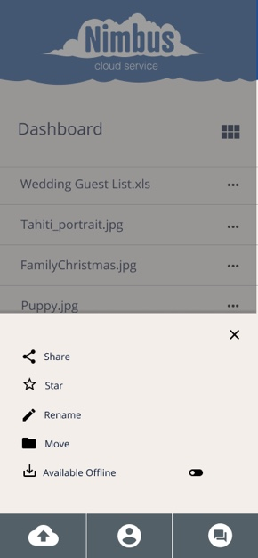

The cloud storage industry is still growing. It’s a great time to jump into this ever-expanding technology and innovate on the ideas that could be expressed in the cloud storage space. This is where Nimbus comes in. Nimbus wants to
rethink how cloud storage works and do the job most efficiently.
Discovery Phase
User Interviews
I wanted to make sure I understood where the user was coming from for cloud storage needs. So I asked many questions, but these are a few:
What are the advantages of using cloud storage?
What bothers you about the current service you use?
What do you love about the current service you use?
What are important features for a cloud service platform?
What do you primarily use the cloud storage for?
We interviewed 24 different users from different parts of the country.
The results

wanted to access the app from desktop too.

strongly wanted to share files with others

didn't strongly feel the need to create files from the platform.

liked cloud storage to use from the several different computers.

used cloude storage for personal reasons
Personas
Jared | Personal User
I’m so glad I don’t have to carry USB drives anymore. Having my files available to me anywhere makes life so much easier.
Age:25-34
Occupation: Non-tech
Location: Mid-sized city
Gender: Male
Tier: Intermediate
Motivation
1.Wants to seamlessly access his
cloud from any device.
2. Share documents with friends.
3. Live life connected to his most important
documents at a click of a button.
Frustrations
1. Doesn’t want to pay a lot for the service.
2. Would like a general place to store
screenshots, links, and found things.
3. Wants the cloud service to be secure.
Ashley | Work User
Everyone loves working with a cloud service so we don’t have to email files back and forth.
Age:25-34
Occupation: Tech
Location: large city
Gender: Female
Tier: Expert
Motivation
1. Wants access to her files
within any country.
2. Needs her job to approve the
security of the platform.
3. To not be stressed that other
people won’t have access to the files
in her Cloud service.
Frustrations
1. Doesn’t want everyone to move
files around, this will cause confusion.
2. Would like to know that if a file gets deleted, she can recover it.
3. Wants the cloud service to be secure.
Competitive Analysis
SWOT Analysis
Strength
Quick call to action
Marketing towards sharing
It’s a safe place
Any file type can be uploaded
Selling to a younger crowd
Easy to navigate
Weaknesses
No pricing on homepage
This market is saturated
gSuite can be confusing to new-comers
Oppurtunities
Well known company may be perceived as more trustworthy
Unique marketing tactics used in the past of requiring an invitation to use
Threats
Competitors copying features
Market is saturated
Many gSuite things could confused the brand
SWOT Analysis
Strength
Marketing towards multi taskers
Focusing is important
Team and individual focused
Weaknesses
No pricing on homepage
This market is saturated
Oppurtunities
Lots of options in the platform
Versatile and can be used many different ways
Plugins that work with it
Threats
Not as many features as competitors
SWOT Analysis
Strength
Short and sweet
Marketing towards business use
It’s easy and fast, convenient.
Clear CTA at bottom of page.
Weaknesses
No pricing on homepage
This market is saturated
Seems a little complicated
Oppurtunities
Newer to the market
Smaller target market
Threats
Market is saturated
Maybe too complicated for quick conversion
Logo Design and Branding
Sketches
Typography Comps
Rough Logo
Color Pallete
Final Logo

Visual Language
Typefaces
Icons
The icons for Nimbus are all based off Material Design. If there is an icon that isn't found in the Material Design library, be sure to design i with the same aesthetic.
User Flows and User Stories
When starting the project it was important to come up with the most important user stories to address for the most viable product (MVP). I made a spreadsheet with all of the user stories and then put them in order of importance to
help define the scope of the project.
high As a new user I would like sign into the app with a username and password
high As a new user I would like the features of the app to be clear before signing up
high As a new user I would like access to FAQ's
high As a new user I would like access to pricing information before I sign up
low As a new user I would like the ability to sign up through facebook or google sign on
low As a new user I would like to be prompted to download the desktop app
User Story for returning users
high As a returning user I would like a mobile way to upload files to the cloud service.
high As a returning user I would like organizing that content using things like categories, tags, groups, and/or folders
medium As a returning user I would like sharing a single .jpg .png .doc .pdf .ai .psd .indd .mov .wav with someone else (and vice-versa)
medium As a returning user I would like sharing a folder or group of items with someone else (and vice-versa)
low As a returning user I would like connecting with other users for real-time collaboration in notes or documents
low As a returning user I would like to be able to organize my items by drag an drop means to folders
low As a returning user I would like to be able to create word documents, spreadsheets, presentations, sketches and forms with the platfrom.
low As a returning user I would like a way to backup my computer easily.
low As a returning user I would like a way to backup only specific files and folders on my computer or device.
low As a returning user I would like to create files from within the platform
low As a returning user I would like to edit photos within the platform
User Flow: Upload Folder
User Flow: FAQ
User Flow: Upload Folder
User Flow: Pricing
User Flow: Features

Lo-Fi Paper Mock-ups
Lo-Fi Paper Mock-ups

Hi-Fi Mock-ups

User Testing
I did preference tests, user interviews, and user tests to figure out what users first impressions would be. My biggest takeaways were that the button should be blue with white text, instead of yellow with white text, and that the
main color shouldn’t be orange, but rather blue. I had originally thought orange because orange implies creativity and energy, but blue implying trustworthiness and calmness went over better with users.
User Interviews
Conclusion
When starting the project it was important to come up with the most important user stories to address for the most viable product (MVP). I made a spreadsheet with all of the user stories and then put them in order of importance to
help define the scope of the project.
Nutrien: Feeding the Future

Klockwerks A/R Employee App